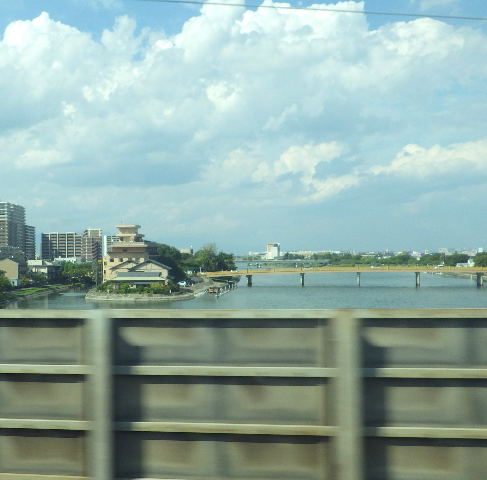

- 지역
- 마이바라 → 교토
- 좌석 쪽
- E석 · 신오사카 방향 오른쪽, 도쿄 방향 왼쪽
- 보이는 시간
- 노조미로 도쿄 출발 후 약 127분
- 볼 수 있는 시간
- 몇 초Nozomi 기준의 대략적인 시간이며, 열차 속도·날씨·가리는 건물 등에 따라 달라집니다.
이야기
세타노 가라하시는 어떤 다리일까요?
세타노 가라하시는 시가현 오쓰시 세타에서 비와호로부터 흘러나오는 세타강을 건넙니다. 7세기 중엽 이전부터 이곳에 다리가 있었다는 기록이 있어 약 1,400년 동안 강을 건너는 길목이었습니다. 일본 역사의 오랜 기간 수도 일대와 동쪽을 잇는 육로에서 사실상 유일한 큰 다리였으므로, 동쪽 군대가 수도로 진군하거나 수도에서 동쪽으로 나설 때 충돌하는 요충지였습니다. ‘교토의 동쪽 관문’, ‘가라하시를 장악하면 천하를 장악한다’는 말도 여기서 나왔습니다. 현재 다리는 1979년에 철근 콘크리트로 다시 지었지만 옛 목조 다리의 윤곽과 따뜻한 갈색 난간을 간직하고 있습니다.
도쿄에서 신오사카 방면으로 가신다면 마이바라 → 교토 구간에 가까워질 때 오른쪽 창문(E석)을 살펴보세요. 도쿄 방면으로 가신다면 순서가 반대가 되며 같은 E석이 왼쪽에 있습니다.
눈여겨볼 것
이 다리에 얽힌 유명한 이야기
빼놓을 수 없는 사건이 672년의 진신의 난입니다. 덴지 천황의 동생 오아마 황자(훗날의 덴무 천황)와 덴지의 아들 오토모 황자가 왕위 계승을 두고 다투었습니다. 수도를 차지하기 위한 결정적인 전투가 이 다리 옆 세타강에서 벌어졌고 오아마 황자가 승리했습니다. 고대 일본 최대 내전의 승패가 사실상 이곳에서 결정된 셈입니다.
헤이안 시대 중기의 전설에서는 다와라 도다로도 불린 후지와라노 히데사토가 이 다리에서 아름다운 여인의 부탁을 받습니다. 미카미산의 거대한 지네를 물리쳐 달라는 것이었는데, 여인의 정체는 비와호의 용신이었습니다. 이 이야기는 사이트의 오미후지 글과도 이어집니다. 다리와 산, 호수가 하나의 전설로 연결되어 있습니다.
1184년 겐페이 전쟁 말기, 기소 요시나카는 교토에서 세타 다리 쪽으로 물러나다 인근 아와즈 전투에서 전사했습니다. 《헤이케 이야기》에서 충신 이마이 가네히라가 다리 위에서 이름을 밝히고 끝까지 싸우는 장면은 특히 유명합니다. 1582년 혼노지의 변으로 아케치 미쓰히데가 오다 노부나가를 죽인 직후에는 세타성주 야마오카 가게타카가 미쓰히데의 동진을 막으려고 이 다리를 불태웠습니다. 에도 시대에는 도카이도 여행 안내서에 여러 번 등장했으며, 우타가와 히로시게의 《오미팔경》에는 ‘세타의 저녁놀’로 그려졌습니다.
일본 속담 ‘이소가바 마와레’, 즉 ‘급할수록 돌아가라’도 이 다리에서 비롯되었습니다. 무로마치 시대의 렌가 시인 소초는 무사가 비와호를 건널 때 야바세 나룻배가 빠르더라도 정말 급하면 긴 세타 다리를 돌아가라고 노래했습니다. 야바세 배는 빠르지만 히에이산에서 갑자기 부는 거센 바람에 노출되었고, 세타노 가라하시를 지나는 육로는 멀어도 믿을 수 있고 안전했기 때문입니다. 이 시에서 오늘날에도 널리 쓰는 속담이 나왔습니다. 시간이 중요할수록 지름길보다 확실한 길을 택하라는 뜻입니다. 창밖의 다리가 바로 그 말의 출발점입니다.
지도에서 보기
위치 한눈에 보기
지도 열기장소와 신칸센 관람 지점을 전환해 보세요.
나만의 차창 가이드
차창 풍경을 놓치지 마세요
더 읽어보기
참고 자료
공식 안내와 차창 풍경 기록.